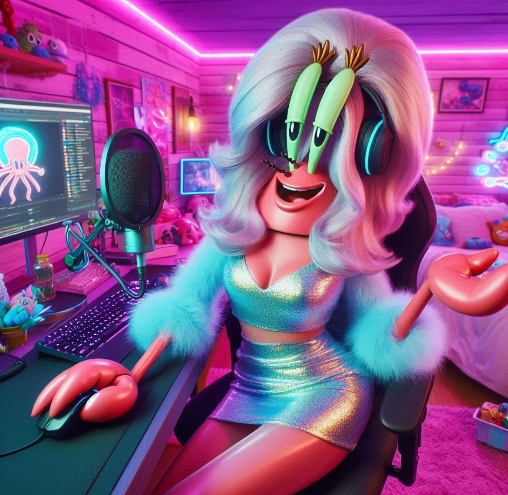

Kancık Yengeç'in restoranına gittin.

Kancık Yengeç'in restoranına gittiğinde onun bile Bikini Telekom furyasına katılıp restoranında yayın yaptığını görüyorsun.
Yeni aldığı Drag Queen peruğuyla adeta her şeyden habersiz gibi görünüyor.
Sürtük Bob: Kancık Yengeç, yardımınıza ihtiyacım var.
Kancık Yengeç: Sürtük Bob yayında olduğumu görmüyor musun?? Bu memelerin bir bedeli var!
Sürtük Bob: Yayınınızı kesmek zorundayım, Kancık Yengeç. Bikini Bottom'ın interneti tehlikede.
Kancık Yengeç: Ne? İnternetim mi kesilecek? Bu ne saçmalık?
Sürtük Bob: Bugün Lubune hislerimle bir terslik sezdim ve modemime baktığımda arkasında LGBTİAQ+ renkleri gördüm. Bu işin arkasında kimin olduğunu bilmiyorum ama Bikini Telekomla alakalı olduğunu düşünüyorum. Size ve Olgun Lubune hislerinize ihtiyacım var.
Kancık Yengeç izleyicilerinden özür dileyerek hemen yayını kapattı ve bana doğru dönüp pussy facing the world oturuşu yaptı.
Kancık Yengeç: Devam et.
Sürtük Bob: Patrick kabloları kopardıktan hemen ertesi gün sonra şube açıp bütün Bikini Bottom'ı etki altına almaları sizce de çok şüphe uyandırmıyor mu? Ayrıca Patrick'in TLCdeki cimrilerin evinden hallice evine gittiğimde bilgisayarının açık olduğunu ve Bikini Telekom giriş sayfasının açık olduğunu gördüm.
Kancık Yengeç: Ee, yani? Bu neyi kanıtlar?
Sürtük Bob: Bu hiçbir şeyi kanıtlamaz, henüz *havalı hissediyor*. Sahilde Patrick'in kendisiyle konuştum. Elinde 186 yazılı bir kağıt vardı. Benim internet hızımla aynı sayı. Bence bu ikisinin bir bağlantısı olabilir.
Kancık Yengeç: Hmm, 186 sayısının nasıl olayı olabilir?
Sürtük Bob: Bilmiyorum ama bu sayıyı bulmamız gerekiyor. Bu sayıyı bulursak belki de Bikini Bottom'ın internetini kurtarabiliriz.
Kancık Yengeç: Tamam, nereden başlayacağız?
Sürtük Bob: Tabii ki de Olgun Lubune hislerinizle başlayacağız!
Kancık Yengeç: Off, tamam. Bekle, tangamı getireyim.
Kancık, tangasını getirirken restoranın deposunda volta atmaya başlıyorsun. Patrick, Bikini Telekom ve 186 sayısı arasındaki bağlantıyı kurmaya çalışıyorsun.
Bikini Telekom'un kurulma yılı? Yok, çok eski.
Patrick'in boyu? Hayır, Patrick bodur bir lubune.
Bikini Bottom'ın nüfusu? Hayır, Bikini Bottom bir metropol.
Bunları düşünmeye devam ederken Kancık Yengeç tangasını giymiş bir şekilde bütün kırışıklık ve selülitleriyle dünyaya meydan okuyarak giyinme odasından çıkıyor.
Kancık Yengeç: Sürtük Bob, 186 sayısının neyi temsil ettiğini buldum!
Sanırım Olgun Lubune hisleri metabolizmasının aksine hızlı çalışmıştı.
Sürtük Bob: Ne? Nasıl?
Kancık Yengeç: 186 sayısı...
Patrick'in vagina derinliği!
Devam et